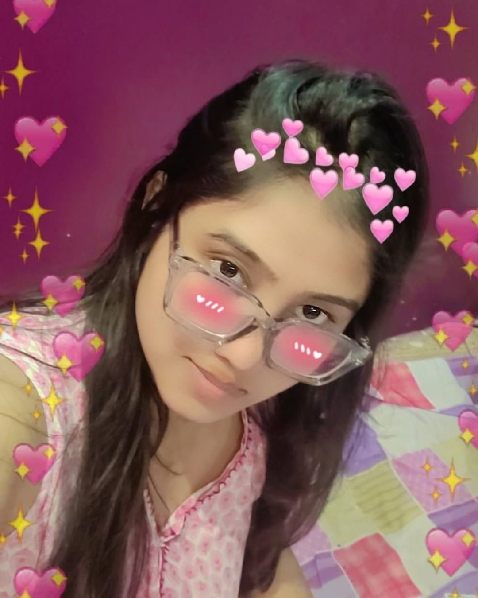
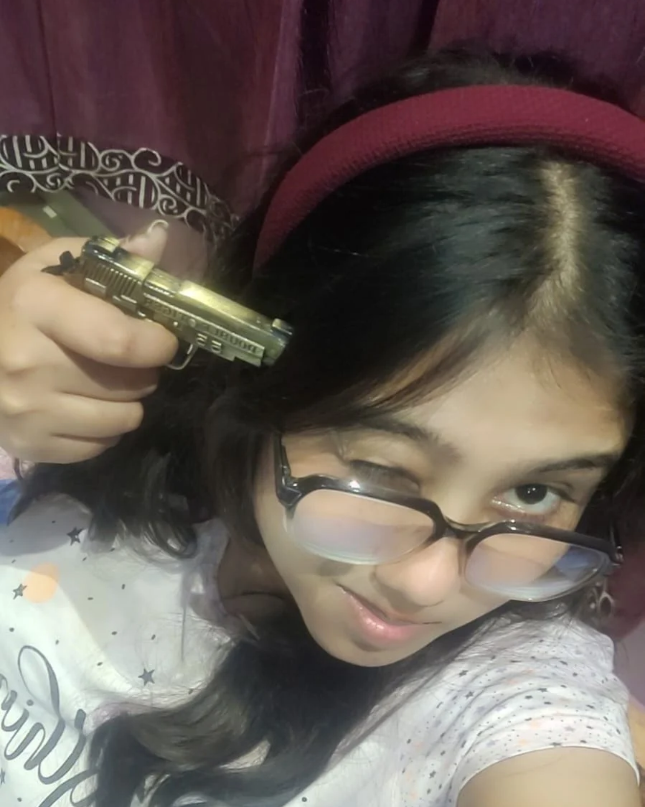
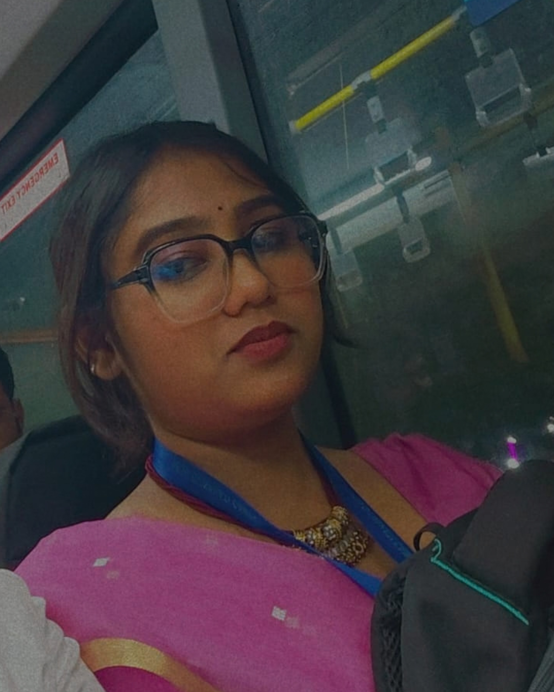
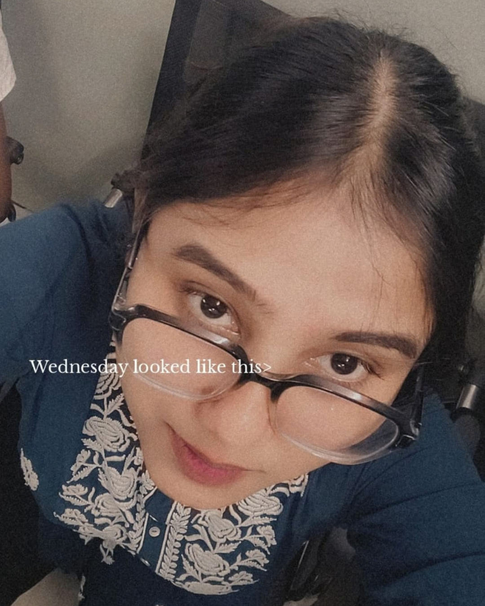
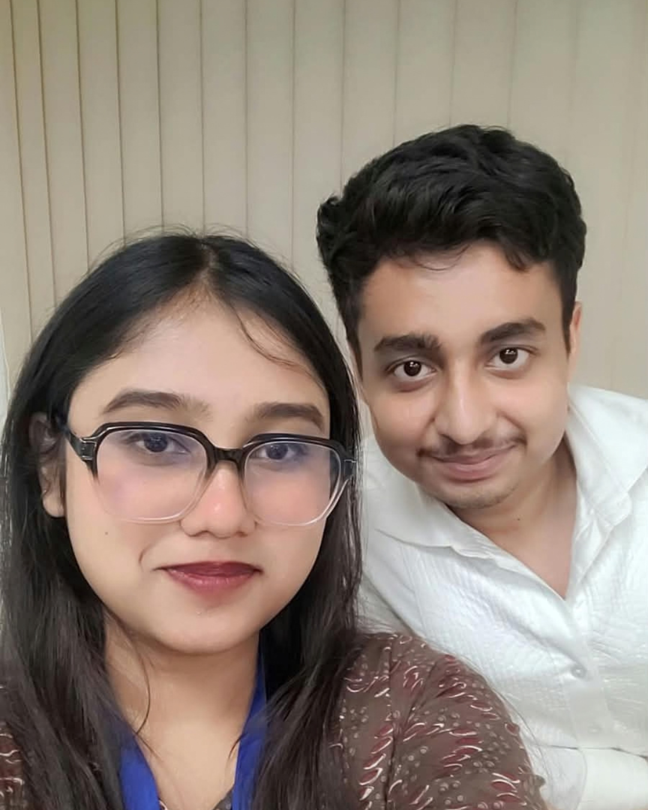

Exhibit A
Exhibit B
Exhibit C
Exhibit DMotive: Bringing two idiots together.
Motive: Being suspiciously convenient.
Motive: Refusing to mind its own business.
Motive: Excessive affection.

My Dearest Rani,
First and foremost, A VERY HAPPY BIRTHDAY to my favourite and dearest human, Jiti Rani Das. ❤️
Before you read anything else, I hope this next chapter of your life brings you closer to the person you have always wanted to become.. I hope you find reasons to smile on days when nothing seems to go right, opportunities that make your eyes light up, people who understand your heart without making you explain it a hundred times and a kind of peace that allows you to breathe without constantly worrying about what comes next. I hope you receive the love you deserve in the way you want to be loved. I hope life becomes gentler with you, your dreams begin turning into beautiful realities and you find yourself looking back one day with a smile realizing that so many things you once wished for have finally become yours.
And selfishly, Rani, I hope every passing day brings me a little closer to knowing you a little more. There is so much I have wanted to tell you for such a long time... I have kept postponing these words, wondering whether there would ever be a right moment to say them... But today is your birthday.. A day that celebrates the simple, extraordinary fact that you exist. And somehow, it feels like the right place to begin. So, I want to start with something simple:
I am genuinely, wholeheartedly glad that you exist.
Not because of what you have done for me, not because of what you might someday become to me but because you are you. Somewhere in this enormous world, among billions of people living their own lives, there is a girl named Jiti who has her own thoughts, her own dreams, her own peculiarities, her own laughter, her own way of looking at things. And I find that incredibly beautiful.
I have met many eyes but somehow, I got lost in yours.
Your eyes were among the first things I noticed about you. There is something about them that makes looking at you feel like an experience I never quite get tired of. Then came your smile, your voice, your expressions and all those little details that I never thought would become so dear to me. Your long, dark hair, your glasses, that particular expression you make when you are unconvinced about something, the little mischief in your eyes when you are about to tease someone. Even the smallest changes in your expressions have somehow become familiar to me.
But I hope you know that your beauty is not limited to the way you look.
I find beauty in the person behind those eyes. In your individuality. In your opinions, your stubbornness, your humor, your little eccentricities, your ambitions and the countless things that make you unmistakably yourself. I love that you are not some perfectly polished, fictional character who exists merely to be admired. You are a real person, with an entire life of your own and that is precisely what makes knowing you so special.
How do I look away now that I have seen you?
And I don't mean that merely in the romantic sense. I mean that once someone becomes genuinely interesting to you, you begin noticing the things that would otherwise pass unnoticed. You begin appreciating their existence in ways you never anticipated. You become curious about the thoughts behind their words, the stories behind their opinions and the experiences that have shaped the person standing before you.
That is what happened to me with you. Somewhere between ordinary conversations, little jokes, random interactions and moments that probably seemed insignificant to you, I started developing an affection that I could no longer explain away.
I think I first loved you in the space between two sentences. Not during some grand, cinematic moment. Perhaps it was the way you paused before answering something, the particular expression on your face when you were trying not to laugh or the way you could be impossibly stubborn about something and then unexpectedly gentle a moment later.
Perhaps it was your voice.
Your voice has this peculiar ability to make an ordinary moment feel a little less ordinary. And when you sing, there is something especially beautiful about it. I hope you never stop singing, Rani. I hope you never become so occupied with the responsibilities of life that you forget the little things that make you happy. I hope you always have reasons to sing, even if it is just for yourself, even if nobody else is listening.
Your laughter, too. God, your laughter.
I hope life gives you countless reasons to laugh until you forget what you were worried about. I hope you experience the kind of happiness that makes you laugh without thinking about how you look, without holding yourself back, without feeling the need to be composed. I hope you remain capable of finding joy in the smallest things.
And I hope you know that you never have to be extraordinary every single day to be worthy of extraordinary love. You are allowed to be tired. You are allowed to be confused. You are allowed to have days when you accomplish absolutely nothing except getting through them. You are allowed to change your mind, make mistakes, outgrow things and become someone you never imagined you would be.
Please, be gentle with yourself. Forgive yourself for not knowing earlier what only time could teach.
You will make decisions that seem right at the time and later discover that you would have chosen differently with the knowledge you have now. You will misunderstand people. You will occasionally doubt yourself. You might look back at certain moments and wish you had handled them differently. But I hope you never allow your past self to become someone you constantly punish.
You were learning. You were growing. You were doing the best you could with what you knew then. And I hope you remember that your worth is not determined by how much you achieve, how useful you are to others, how perfectly you handle your responsibilities or how little trouble you cause anyone.
You are worthy simply because you are a human being deserving of dignity, kindness and love. I hope the people around you remind you of that. I hope you have people who celebrate your accomplishments without making you feel that you must accomplish something to deserve their affection. People who appreciate your presence even when you have nothing particularly interesting to say. People who allow you to be imperfect without making you feel that your imperfections diminish you.
And if life ever becomes particularly difficult, I hope you remember that you do not have to carry everything alone. The more I learn about your life, your family, your struggles, your worries and even the little things concerning your health, the more I find myself wishing that life would be kinder to you. Not because I think you are incapable of handling things yourself but because being capable should never mean being required to handle everything without support.
If you'd allow me, I'd like to be that someone who can make things a little lighter for you.
That someone who listens without immediately judging. Someone who respects your decisions even when he might see things differently. Someone who can sit beside you through a difficult conversation without making you feel that you need to hide your emotions. Someone who celebrates your victories as enthusiastically as he respects your struggles. I want to see your burdens become lighter, your dreams come true one by one and the day arrive when you realize that you never had to prove your strength by carrying everything alone.
You are so much more than the things you have struggled with. You are not simply the difficult days you have survived. You are also the beautiful days you have created, the laughter you have shared, the dreams you continue to pursue and the little moments of happiness that belong entirely to you. I hope this birthday reminds you of that.
And now, Rani, I have a confession to make.
You have become an extremely important part of my life.
Funnily enough, I cannot point to a single day on which you agreed to become part of my life in this way. There was no conversation in which we decided that you would start occupying my thoughts at inconvenient hours, no agreement that your happiness would become something I wondered about, no warning that an ordinary interaction with you might later return to me while I was doing something completely unrelated.
You never promised me anything. You were simply living your life, being yourself and somehow, I found myself developing feelings I would eventually struggle to explain even to myself. I have met plenty of people. I have had conversations that lasted hours, met interesting personalities, appreciated beautiful faces, laughed with people and enjoyed their company. But somehow, with you, my interest became something more.
First, I noticed you. Then I started looking forward to talking to you. Then I began remembering little things you had said without trying to memorize them. Somewhere along the way, I started wondering how your day was going, whether something had made you happy, whether you had been able to rest, whether you were enjoying yourself. And then I realized that I was no longer merely enjoying your company.
I was falling in love with you. I have deeply and madly fallen in love with you, Jiti.
তুমি নুবুজিবা মই তোমাক কিমান ভাল পাওঁ। মই সদায় তোমাৰ কথা ভাবি থাকোঁ। সঁচা কথা ক'বলৈ গ'লে, মই তোমাক হৃদয়ৰ পৰা ভাল পাওঁ।
And yet, even after all this, I know that love is not simply about how intensely one person feels. It is also about how carefully one treats the person they love. There is an old saying that two intelligent people cannot fall in love because at least one of them must be a fool. I think there is some truth hidden inside that idea, although I would argue that love does not require stupidity. It requires courage.
An intelligent person is exceptionally good at recognizing patterns, questioning intentions, anticipating what could go wrong and protecting themselves from disappointment. Those are wonderful abilities in life. But sometimes, in love, we become so occupied with finding evidence that we forget to experience the feeling itself. We question every beautiful gesture. We analyze every sentence. We protect our hearts so carefully that we sometimes protect ourselves from the possibility of being loved, too. And then comes the so-called fool. The person who sends the first message, admits they miss someone and expresses affection without knowing whether it will be returned. Not because they do not understand the risks but because they have decided that some things are worth risking. Perhaps love does not need an idiot after all. Perhaps it simply needs someone brave enough to look like one.
And, Rani, I suppose I have become that person.
But I want you to know that my courage does not come with an expectation that you must be equally brave. You do not have to reciprocate my feelings simply because I have expressed them. You do not owe me a particular answer, a particular affection or a particular future.
I cannot hate you because you couldn't love me.
I could never consider your feelings a wrongdoing. If you feel differently from me, that does not make your heart unkind nor does it make my affection meaningless. I simply wanted you to know that somewhere in this world, there is someone who thinks you are genuinely wonderful. Someone who finds joy in knowing you. Someone who wishes you well, even in circumstances where his own wishes might be different. And someone who hopes that you will always be loved in a way that makes you feel safe, respected, understood and appreciated. There is a line I often think about:
What a privilege it is to have known a happiness that made losing it hurt this much.
But I would also like to say: What a privilege it is to have known something so beautiful, even if you never meant to stay. And perhaps the most important part is this: what a privilege it is to have known you at all.
I do not want to make my affection sound like a tragedy. Knowing you has not been some terrible mistake I wish I could undo. You have given me something genuinely beautiful simply by being a person I came to appreciate so deeply. I do not ask for your love in return. To love you is enough for me to recognize that my heart is capable of feeling something this sincere. To have known you, to have experienced your presence, to have had the opportunity to appreciate you, will remain something I am grateful for. And if we cannot be together in the future, I sincerely hope your future partner loves you more than I ever could.
I hope he sees the beauty in you that I see. I hope he appreciates the little things that make you who you are. I hope he understands your silences, respects your boundaries, celebrates your ambitions and never makes you question whether you are worthy of being loved. I hope he loves you in ways that I might never have had the opportunity to. I hope you receive a love that is not merely passionate but peaceful. Not merely exciting but dependable. Not merely full of promises but supported by actions.
Because you deserve that, Rani.
And if life somehow allows me to be the person who shares those ordinary days with you, I would consider it an extraordinary privilege. I would love to know you more deeply. To hear your stories, to learn the things that make you happy, to celebrate your achievements and to share the little details of life that may seem insignificant to everyone else. I would love to be someone you can talk to without feeling the need to be impressive, someone with whom you can be entirely yourself. I would love to share ordinary afternoons, silly conversations, unexpected laughter and those quiet moments when simply being in someone's company is enough. I do not dream of a perfect relationship. I dream of something genuine.
Something in which we can disagree without disrespecting one another, make mistakes without becoming enemies and grow without expecting the other person to remain exactly the same. Something in which both people are free to be themselves and still choose to build a life together. I would like to be chosen, not out of obligation, not out of sympathy, not because I have waited long enough but because you genuinely want me beside you. Whether you like it or not, my heart will always belong to you and the memories I have of you. But your life, your decisions, your future and your happiness belong entirely to you.
I also want to tell you something that I find particularly beautiful about love. When you love someone, you love the person they are, not the person you would like them to become. I do not want to love an imaginary version of you who never gets tired, never disagrees, never makes mistakes and always responds exactly as I hope. That would not be fair to you. I want to appreciate the real person you are, including the parts I have yet to understand. I want you to have the freedom to surprise me, to change, to grow and to become more fully yourself.
You do not have to become perfect to be loved. You do not have to become easier to understand. You do not have to become someone else's idea of an ideal woman. You are allowed to be Jiti Rani Das. And that, to me, is more than enough.
I wish you knew how many times I have looked for you without realizing I was even looking. How my eyes have searched a crowded room before I consciously thought about who I came there with. How I have sometimes hoped that you might notice something different about me. How many messages I have rewritten because I wanted to say something that sounded just right. I wish you knew how many ordinary things have reminded me of you. But I do not want you to feel that you must carry the weight of knowing all of this. I simply wanted to share a little of the affection that has quietly grown within me.
My heart is so full of you that I can hardly call it entirely my own. And if I could ask the universe for one thing on your birthday, it would not necessarily be for you to become mine. It would be for you to be happy.
If the whole world were placed before me with every treasure a heart could desire, I would look past it all and reach for you. For what is my life filled with everything if the one person I want to share it with isn't there? If life granted me one wish, I would ask for you. But even that wish comes with a hope that your own wishes remain just as important.
I hope you find the life you want, whether or not it looks anything like the one I imagine. I hope you never have to sacrifice your happiness to satisfy someone else's expectations. I hope you find the courage to pursue the things that matter to you and the wisdom to let go of the things that no longer serve you. And whenever life becomes overwhelming, I hope you remember:
This too shall pass.
The difficult days will not last forever. The uncertainties will eventually become clearer. The things that seem impossible today may become manageable tomorrow. You will grow through experiences you cannot yet understand and one day, you may look back and realize how far you have come. Please remember to celebrate yourself along the way. Not just when you accomplish something extraordinary but when you do something small that required courage. When you choose rest instead of exhaustion. When you speak up for yourself. When you forgive yourself. When you take another step toward a dream that has been waiting patiently for you.
I hope you become proud of the woman you are. And I hope that, throughout all the changes life brings, you never lose the little things that make you so wonderfully you. Your laughter. Your voice. Your curiosity. Your stubbornness. Your kindness. Your ability to find joy in ordinary moments. I hope the world never convinces you that these things are insignificant.
They are not insignificant. They are part of what makes your existence beautiful. So, my dearest Rani, on your birthday, I want to wish you a life filled with moments that make you genuinely happy. I wish you good health, meaningful friendships, beautiful opportunities, fulfilling achievements, peaceful mornings, restful nights and countless reasons to smile.
I wish you the courage to pursue what you love, the strength to overcome what challenges you and the wisdom to recognize when you deserve something better. I wish you people who love you without trying to change you, people who listen without making you feel burdensome and people who celebrate your happiness as though it were their own. I wish you a future in which you feel loved, valued, respected and appreciated. I wish you a life in which your dreams do not remain merely dreams. And I wish you the kind of happiness that does not need to be explained to anyone.
As for me, I am simply grateful that I got to know you.
I am grateful for the conversations, the laughter, the little memories and all the ordinary moments that somehow became special to me. I am grateful that you exist, that you are the person you are and that I had the opportunity to develop such sincere affection for you. I hope you know that you are appreciated far more than you might realize. I hope you know that your existence can make a difference in someone's life without you having to do anything extraordinary. And I hope you know that you deserve every beautiful thing life has to offer.
Happy Birthday once again, my dearest Jiti.
May this year bring you closer to your dreams. May your heart remain soft without becoming vulnerable to unnecessary cruelty. May you always have reasons to laugh, songs to sing, people to love and moments to cherish. May you never forget how precious your existence is. And if I could leave you with one final thought, it would be this:
I do not know what the future holds for us. I do not know whether our paths will eventually lead us toward each other in the way I sometimes hope. But I know that, today, I am glad you are here. I am glad I met you. I am glad that somewhere along the way, I discovered how beautiful it can be to care about another person so deeply.
You never had to become mine for my feelings to be real. You never have to become someone else to be worthy of love. And you never have to carry the burden of being perfect to deserve happiness. I hope life loves you gently, Rani. And until the end of whatever story life writes for us, I hope you continue to be the wonderful, imperfect, beautiful human being that you are. Because once, among all the eyes I have ever met, I got lost in yours. And I have never regretted the privilege of finding you.
Happy Birthday, my favourite human. I love you the most, Rani. Same as Always. ❤️
With all the affection my heart has learned to hold for you,
Yours, always in the most sincere and gentle way,
A.